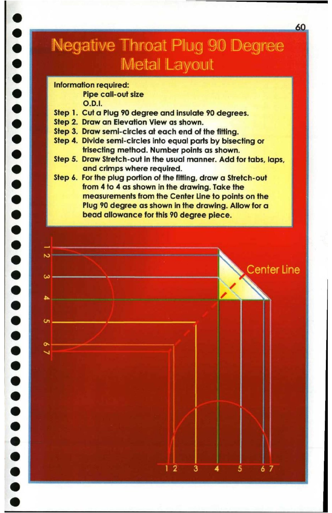

60. Negative Throat Plug 90 Degree Metal Layout

— See
e U)
® Information required:
© Pipe call-out size
O.D.I.
Step 1. Cut a Plug 90 degree and insulate 90 degrees.
® Step 2. Draw an Elevation View as shown.
Step 3. Draw semi-circles at each end of the fitting.
@ Step 4. Divide semi-circles into equal parts by bisecting or
s trisecting method. Number points as shown.
Step 5. Draw Stretch-out in the usual manner. Add for tabs, laps,
Cs) and crimps where required.
Step 6. For the plug portion of the fitting, draw a Stretch-out |
2) from 4 to 4 as shown in the drawing. Take the
@ measurements from the Center Line to points on the
Plug 90 degree as shown in the drawing. Allow for a |
bead allowance for this 90 degree piece.
|
2 7
os - a %
ny 7 ~~
@ (_?@[?_ S % i 4 Laie
e fs bas ll A=
am
@ —
@
*» |
@
® baa
° \
@ x
a Wa 3 4 5 67
ce]
&